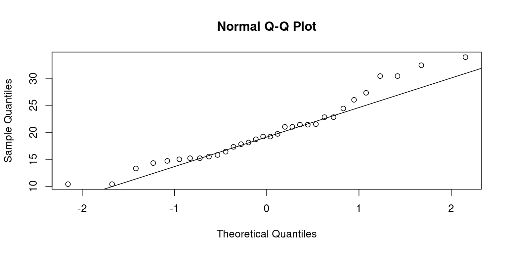

# Load the required libraries, suppressing annoying startup messages
library(dplyr, quietly = TRUE, warn.conflicts = FALSE)
library(tibble, quietly = TRUE, warn.conflicts = FALSE)
# Read the mtcars dataset into a tibble called tb
data(mtcars)
tb <- as_tibble(mtcars)
# Convert relevant columns into factor variables
tb$cyl <- as.factor(tb$cyl) # cyl = {4,6,8}, number of cylinders
tb$am <- as.factor(tb$am) # am = {0,1}, 0:automatic, 1: manual transmission
tb$vs <- as.factor(tb$vs) # vs = {0,1}, v-shaped engine, 0:no, 1:yes
tb$gear <- as.factor(tb$gear) # gear = {3,4,5}, number of gears
# Directly access the data columns of tb, without tb$mpg
attach(tb)Univariate Continuous data (Part 1 of 2)
Chapter 10.
Exploring Univariate Continuous Data
This chapter explores how to summarize and visualize univariate, continuous data.
Univariate continuous data refers to data coming from one feature or variable, which could take on an infinite number of possible values, typically within an interval [1].
For instance, in the
mtcarsdataset in R, variables likempg(miles per gallon),wt(weight), andhp(horsepower) epitomize continuous data. They are not limited to specific, separate numbers and can encompass any value, including decimal points, within their respective ranges.Data: Suppose we run the following code to prepare the
mtcarsdata for subsequent analysis and save it in a tibble calledtb. [1]
Measures of Central Tendency
In our journey of understanding data, we often turn to certain statistical tools, among which, the measures of central tendency play a pivotal role. These measures provide a way to summarize our data with a single value that represents the “center” or the “average” of our data distribution. [2]
Primarily, there are three measures of central tendency that we often rely on: the mean, median, and mode. [2]
As an illustration, here is R code to determine the
meanandmedianof thewt(weight) for all vehicles: [3]
# Mean of wt
mean(wt)[1] 3.21725# Median of wt
median(wt)[1] 3.325Measures of Variability
In our exploration of continuous data, we also consider measures of variability. These statistical measures provide insight into the spread or dispersion of our data points. To further illustrate the concepts we’ve discussed, we’ll apply these measures of variability to the
mpgcolumn from themtcarsdataset. [3]Range: This is the difference between the highest and the lowest value in our data set. However, while
rangeis easy to calculate and understand, it is sensitive to outliers, so we must interpret it carefully. Therange()function in R provides the minimum and maximummpg. [3]
# Range of mpg
range(mpg)[1] 10.4 33.9- Min and Max: We can off course measure the minimum and maximum values, using the following simple code. [3]
# Minimum mpg
min(mpg)[1] 10.4# Maximum mpg
max(tb$mpg)[1] 33.9- Variance: It is calculated as the average of the squared deviations from the mean. Larger variances suggest that the data points are more spread out around the mean. One limitation of the variance is that its units are the square of the original data’s units, which can make interpretation difficult. We use the var() function to compute the variance. [3]
# Variance of mpg
var(tb$mpg)[1] 36.3241- Standard Deviation: This is simply the square root of the variance. Because it is in the same units as the original data, it is often easier to interpret than the variance. A larger standard deviation indicates a greater spread of data around the mean. [3]
# Standard Deviation of mpg
sd(tb$mpg)[1] 6.026948- Interquartile Range (IQR): It is another measure of dispersion, especially useful when we have skewed data or outliers. It represents the range within which the central 50% of our data falls. This measure is less sensitive to extreme values than the range, variance, or standard deviation. To find the interquartile range (IQR), which provides the spread of the middle 50% of the
mpgvalues, we use theIQR()function. [3]
# Inter-Quartile Range of mpg
IQR(tb$mpg)[1] 7.375- Skewness and Kurtosis:
Skewness is a measure of the asymmetry of our data. Positive skewness indicates a distribution with a long right tail, while negative skewness indicates a distribution with a long left tail.
Kurtosis, on the other hand, measures the “tailedness” of the distribution. A distribution with high kurtosis exhibits a distinct peak and heavy tails, while low kurtosis corresponds to a flatter shape.
These two measures can be computed using the
skewness()andkurtosis()functions from themomentspackage.
# Load moments package
suppressPackageStartupMessages(library(moments))
# Skewness of 'wt' in the mtcars dataframe
skewness(tb$wt)[1] 0.4437855# Kurtosis of 'wt' in the mtcars dataframe
kurtosis(tb$wt)[1] 3.172471- Overall, these measures of variability help us quantify the dispersion and shape of our data, offering a more complete picture when combined with measures of central tendency. [3]
Summarizing Univariate Continuous Data
Our primary objective in summarizing data is to gain an initial overview or snapshot of the data set we’re dealing with. This fundamental analysis provides us a sense of the data’s central tendency, spread, and distribution shape, which in turn guides our decision-making process for subsequent stages of data analysis.
In R, the
summary()function offers a succinct summary of the selected data object. When applied to a numeric vector such asmpgfrom themtcarsdataset, it yields the minimum and maximum values, the first quartile (25th percentile), the median (50th percentile), the third quartile (75th percentile), and the mean. [3]
# A summary of 'mpg'
summary(tb$mpg) Min. 1st Qu. Median Mean 3rd Qu. Max.
10.40 15.43 19.20 20.09 22.80 33.90 - The
describe()function, part of thepsychpackage, goes a step further by providing a more comprehensive summary of the data. It includes additional statistics like the number of valid (non-missing) observations, the standard deviation, and metrics of skewness and kurtosis [4].
suppressPackageStartupMessages(library(psych))
# A summary of 'mpg' using describe()
describe(mpg) vars n mean sd median trimmed mad min max range skew kurtosis se
X1 1 32 20.09 6.03 19.2 19.7 5.41 10.4 33.9 23.5 0.61 -0.37 1.07- Specific columns from
describe(tb$mpg)
# Select specific columns from describe(mpg)
columns = c("n","mean","sd","median","min","max","skew","kurtosis")
describe(mpg)[, columns] n mean sd median min max skew kurtosis
X1 32 20.09 6.03 19.2 10.4 33.9 0.61 -0.37Summarizing an entire dataframe or tibble
- The function
summary()in R can also be employed to summarize the entirety of a dataframe or tibble in a comprehensive manner. [3].
# A summary of the tibble tb
summary(tb) mpg cyl disp hp drat
Min. :10.40 4:11 Min. : 71.1 Min. : 52.0 Min. :2.760
1st Qu.:15.43 6: 7 1st Qu.:120.8 1st Qu.: 96.5 1st Qu.:3.080
Median :19.20 8:14 Median :196.3 Median :123.0 Median :3.695
Mean :20.09 Mean :230.7 Mean :146.7 Mean :3.597
3rd Qu.:22.80 3rd Qu.:326.0 3rd Qu.:180.0 3rd Qu.:3.920
Max. :33.90 Max. :472.0 Max. :335.0 Max. :4.930
wt qsec vs am gear carb
Min. :1.513 Min. :14.50 0:18 0:19 3:15 Min. :1.000
1st Qu.:2.581 1st Qu.:16.89 1:14 1:13 4:12 1st Qu.:2.000
Median :3.325 Median :17.71 5: 5 Median :2.000
Mean :3.217 Mean :17.85 Mean :2.812
3rd Qu.:3.610 3rd Qu.:18.90 3rd Qu.:4.000
Max. :5.424 Max. :22.90 Max. :8.000 - Discussion
For numeric columns,
summary()delivers a six-number summary that includes minimum, first quartile (Q1 or 25th percentile), median (Q2 or 50th percentile), mean, third quartile (Q3 or 75th percentile), and maximum. This gives a broad understanding of the central tendency and dispersion of the data within each numeric column.For categorical (factor) columns,
summary()generates the counts of each category level. The output of this code is essentially a comprehensive snapshot of thetbtibble, enabling us to quickly understand the nature of our data. [3]
- To obtain a more detailed statistical summary of an entire dataframe or tibble, we can employ the
describe()function from thepsychpackage [4].
# Select specific columns from describe(mpg)
columns = c("n","mean","sd","median","min","max","skew","kurtosis")
describe(tb)[, columns] n mean sd median min max skew kurtosis
mpg 32 20.09 6.03 19.20 10.40 33.90 0.61 -0.37
cyl* 32 2.09 0.89 2.00 1.00 3.00 -0.17 -1.76
disp 32 230.72 123.94 196.30 71.10 472.00 0.38 -1.21
hp 32 146.69 68.56 123.00 52.00 335.00 0.73 -0.14
drat 32 3.60 0.53 3.70 2.76 4.93 0.27 -0.71
wt 32 3.22 0.98 3.33 1.51 5.42 0.42 -0.02
qsec 32 17.85 1.79 17.71 14.50 22.90 0.37 0.34
vs* 32 1.44 0.50 1.00 1.00 2.00 0.24 -2.00
am* 32 1.41 0.50 1.00 1.00 2.00 0.36 -1.92
gear* 32 1.69 0.74 2.00 1.00 3.00 0.53 -1.07
carb 32 2.81 1.62 2.00 1.00 8.00 1.05 1.26- Discussion:
The
describe()function analyzes each column in the provided tibble individually and outputs a range of useful statistics. For numeric columns, it offers count, mean, standard deviation, trimmed mean, minimum and maximum values, range, skewness, and kurtosis among others.For non-numeric or factor columns, the
describe()function still provides a count of elements but defaults toNAfor the rest of the statistics, as these metrics are not applicable.
Visualizing Univariate Continuous Data
In our journey to explore and understand univariate continuous data, visualizations act as our valuable companions. Visual graphics provide us with an instant and clear understanding of the underlying data patterns and distributions that may otherwise be challenging to discern from raw numerical data.
Let’s take a closer look at some of the most effective ways of visualizing univariate continuous data, including
Bee Swarm plots;
Stem-and-Leaf plots
Histograms;
PDF and CDF Density plots;
Box plots;
Violin plots;
Quantile-Quantile (Q-Q) Plots
Bee Swarm Plot
- A Bee Swarm plot is a one-dimensional scatter plot that reduces overlap and provides a better representation of the distribution of individual data points. This type of plot provides a more detailed view of the data, particularly for smaller data sets. [5]
# Load the beeswarm package
library(beeswarm)
# Create a bee swarm plot of wt column
beeswarm(tb$wt,
main="Bee Swarm Plot of Weight (wt)",
xlab = "Weight ('000 kg)",
pch=16, # type of points
cex=0.8, # size of the points
col="blue",
horizontal = TRUE)- Discussion
In the above code, we load the
beeswarmpackage using thelibrary()function.We then create a bee swarm plot of the
wtcolumn using thebeeswarm()function.The
mainargument is used to specify the title of the plot.The
pchargument is used to set the type of points to be plotted, and thecexargument is used to set the size of the points.The
colargument is used to set the color of the points.The resulting plot displays the individual
wtvalues in the dataset as points on a horizontal axis, with no overlap between points. This provides a visual representation of the distribution of the data, as well as any outliers or gaps in the data.horizontal = TRUE: Renders it horizontally rather than the default vertical orientation.
Stem-and-Leaf Plot
Stem-and-leaf plots serve as an efficient tool for visualizing the distribution of data, particularly when working with small to medium-sized datasets. The method involves breaking down each data point into a “stem” and a “leaf”, with the “stem” representing the primary digit(s) and the “leaf” embodying the subsequent digit(s) [7]
We can utilize the
stem()function in R to devise stem-and-leaf plots. Here’s how we can apply it to thewtcolumn:
stem(wt)
The decimal point is at the |
1 | 5689
2 | 123
2 | 56889
3 | 22224444
3 | 55667888
4 | 1
4 |
5 | 334In the resulting plot, the vertical bar (“|”) symbolizes the decimal point’s location.
This visual representation enables us to swiftly assess the data’s distribution, the center, and the spread, in a fashion similar to a histogram. However, unlike a histogram, a stem-and-leaf plot retains the original data to a certain degree, providing more granular detail.
Histogram
A histogram is a graphical representation showcasing the frequency of discrete or grouped data points within a dataset.
It splits the data into equal-width bins, with the height of each bar matching the frequency of data points in each respective bin.
It serves as a valuable tool for demonstrating the distribution shape of the data. In R, we can construct a histogram using the
hist()function and control its appearance. The final histogram visually depicts the frequency ofmpgvalues in the dataset, where each bar represents the count of observations within a specific range of values. [6]
# Create a histogram of mpg column with a specific number of bins of equal width
hist(tb$mpg,
breaks = 12, # This creates 12 bins of equal width
main="Histogram of mpg (with 12 breaks)",
xlab="Miles per gallon (mpg",
col="lightblue",
border="black")
- Discussion:
This code generates a histogram of
mpgusing thehist()function. Themainargument denotes the plot’s title, while thexlabargument labels the x-axis.We use the
colargument to specify the color of the histogram bars, and theborderargument to determine the color of the bar borders.We can control the number of bins or the ranges of the bins in a histogram using the
breaksargument inside thehist()function:
- We can alternately specify the ranges of the bins:
# Create a histogram of mpg column with specific bin ranges
hist(tb$mpg,
breaks = seq(5, 35, by = 5), # This creates bins with ranges 10-15, 15-20, etc.
main="Histogram of Mileage (with breaks of 5)",
xlab="Miles per gallon (mpg)",
col="lightblue",
border="black")- Discussion:
The breaks argument uses the
seq()function to create a sequence of break points from 5 to 35, with a step of 5.This results in bins with ranges 5-10, 10-15, 15-20, 20-25, 25-30, and 30-35. [7]
Probability Density Function (PDF) plot
Smoothed approximations of histograms are often represented by density plots, as they assist in offering an estimation of the underlying continuous probability distribution of a given dataset. [3]
Compared to histograms, these plots often present superior accuracy and aesthetic appeal, and they eliminate the need for arbitrary bin selection. A density plot shares several similarities with a histogram. However, instead of presenting the frequency of individual values, it conveys the probability density of the dataset. [3]
# Calculate density
dens <- density(mtcars$mpg)
# Create a density plot
plot(dens,
main = "Probability Density Function (PDF) of Mileage (mpg)",
xlab = "Miles per gallon (mpg)",
)
# Add a polygon to fill under the density curve
polygon(dens, col = "lightblue", border = "black")- Discussion:
We use the
density()function to generate a PDF plot for thempgcolumn.Here, we utilize the
plot()function to graph the resulting density object.The
mainargument stipulates the title of the plot, while thexlabargument designates the label for the x-axis.Through the
polygon()function, we determine the shaded color.The final plot displays the probability density of
mpgvalues, using the curve to signify the data distribution. [3]
Cumulative Distribution Function (CDF) Plot
CDF plots visualize the fraction of data points that are less than or equal to a specified value on the x-axis [3].
They facilitate easy representation of the median, percentiles, and spread.
In R, we can employ the
ecdf()function to generate a CDF plot.
# Create a CDF plot of mpg column
plot(ecdf(tb$mpg),
main = "CDF of Miles Per Gallon (mpg)",
xlab = "Miles Per Gallon (mpg)",
ylab = "Cumulative Density",
col = "blue", # Line color
lty = 2,
)
grid(col = "gray", lty = "dotted") # Add a grid to the plot
- Discussion:
ecdf(tb$mpg): The functionecdf()computes the empirical cumulative distribution function (CDF) for the mpg column from thetbdata frame.plot(ecdf(tb$mpg)): Plots the CDF of the mpg column.main, xlab, ylab: Set the title and axis labels.col = "blue": Colors the plot line blue;lty = 2: Uses a dashed line.grid(col = "gray", lty = "dotted"): Adds a gray, dotted grid to the plot.
- Computing and Inversing CDF Values
The following code demonstrates how to determine the cumulative distribution function (CDF) value for a given
mpgusingecdf()and how to find thempgvalue corresponding to a specific CDF withquantile().Suppose we want to identify the CDF at
mpg = 20, here is how we do it:
# Generate the empirical cumulative distribution function
ecdf_func <- ecdf(tb$mpg)
# Derive the CDF for mpg = 20
ecdf_func(20)[1] 0.5625- If we’re interested in knowing the
mpgvalue that corresponds to a certain CDF value, thequantile()function comes to our aid. For instance, we can obtain thempgvalue associated with a CDF of0.6as follows:
# Discover the mpg corresponding to CDF = 0.6
quantile(tb$mpg, 0.6)60%
21 Box Plot
Box-and-whisker plots, commonly known as box plots, are crucial graphical instruments for illustrating a distribution’s center, spread, and potential outliers [7].
Here is sample code to generate a boxplot of
wt(Weight) of the cars. [3]
boxplot(tb$wt,
main = "Boxplot of Weight (wt)",
ylab = "",
xlab = "Weight ('000 kg)",
col = "lightblue",
horizontal = TRUE
)
The box plot’s construction involves the use of an interquartile range (IQR) represented by a box, which contains the middle 50% of the dataset, from Q1 to Q3.
The box’s internal line signifies the median, while the “whiskers” reach out to the smallest and largest observations within a distance of 1.5 times the IQR.
The whiskers extend to the minimum and maximum non-outlier values, or 1.5 times the interquartile range beyond the quartiles, whichever is shorter.
Any points outside of the whiskers are considered outliers and are plotted individually.
Discussion:
The above R code creates a horizontal light blue boxplot for the
wtcolumn of thetbdata frame, titled “Boxplot of Weight (wt)”, with the x-axis labeled “Weight (’000 kg)” and no y-axis label.horizontal = TRUE: Renders the boxplot horizontally rather than the default vertical orientation.
Violin Plot
Violin plots are a compelling tool to merge the benefits of box plots and kernel density plots and enable us to depict a detailed view of data distribution.
These plots exhibit the probability density at different values, where the plot’s breadth represents the density or frequency of data points. More extensive areas denote a higher aggregation of data points Akin to a box plot, a violin plot provides a visual display of the entire data distribution via a kernel density estimate, as opposed to just presenting the quartiles [8].
The
vioplot()function, part of thevioplotpackage in R, allows us to create a violin plot.
suppressPackageStartupMessages(library(vioplot))
# Constructing a violin plot for the wt
vioplot(tb$wt,
main="Violin Plot of Weight (wt)",
col = "lightblue",
horizontal = TRUE,
xlab="Weight"
)- Discussion:
In this code, the
vioplot()function crafts a violin plot for thewtvariable. We use themainargument to assign the plot’s title and thexlabargument to designate the axis label.The resulting plot unveils the entire
wtdata distribution, with a kernel density estimate indicating the concentration of data points at different sections.The plot also visualizes the boxplot and the median, quartiles, and any outliers present in the data.
horizontal = TRUE: Renders the violin plot horizontally rather than the default vertical orientation.
Quantile-Quantile (Q-Q) Plot
Quantile-Quantile plots, commonly referred to as Q-Q plots, are a visual tool we use to check if data follows a particular distribution, like a normal distribution.
Suppose we order a data column from the smallest to the biggest value, and each data point gets a score based on its position. This is what we call a quantile. Now, imagine a perfectly normal distribution doing the same thing. In a Q-Q plot, we compare our data’s scores to the scores from the ideal normal distribution.
If our data aligns with the normal distribution, the points in the Q-Q plot will form a straight line. But if our data doesn’t follow the normal distribution, the points will stray from the line. This way, the Q-Q plot gives us an intuitive, visual way to decide if our data is normally distributed or not [3].
In R, we can use the
qqnorm()function to create the plot and theqqline()function to add the reference line. If the points lie close to the reference line, it’s a good indication that our data is normally distributed.
# Generate a Q-Q plot for 'mpg' column
qqnorm(tb$mpg)
# Add a reference line to the plot
qqline(tb$mpg)
- This approach isn’t limited to normal distributions. We can compare our data with other distributions too, which makes Q-Q plots a versatile tool for understanding our data.
Summary of Chapter 10 – Univariate Continuous data (Part 1 of 2)
This chapter examines continuous univariate data, focusing on single variables in the ‘mtcars’ dataset using R’s dplyr and ggplot packages. We employ R’s inherent functions and the ‘modeest’ package to compute the mean, median, and mode, alongside variability measures like range, variance, and standard deviation.
We use R’s summary() and the psych package’s describe() functions to create succinct and detailed overviews of our data, providing insights into its central tendency, spread, and distribution shape. These functions can also summarize an entire dataframe or tibble, setting the stage for future analysis.
Visualisations are key to understanding data patterns and distributions. We use bee swarm plots, box plots, violin plots, histograms, and density plots. Bee swarm plots, using the beeswarm() function, show all data points and their distributions. Stem-and-leaf plots, created using the stem() function, provide a quick evaluation of the distribution.
Histograms, constructed with the hist() function, and density plots, using the density() function, display data frequency and smoothed approximations respectively. Cumulative Distribution Function (CDF) plots, via the ecdf() function, show the proportion of data points equal to or less than specific values.
Box plots, made with the boxplot function, highlight the distribution’s center, spread, and outliers. Violin plots, via the vioplot() function, merge box plots and kernel density plots to display data density. Lastly, Q-Q plots, created using qqnorm() and qqline(), verify if data follows a normal distribution.
To summarize, this chapter presents key R functions and techniques for visualizing continuous univariate data, providing valuable insights into data patterns and distributions.
References
R programmng:
[1] Crawley, M. J. (2007). The R Book. Wiley.
Kabacoff, R. I. (2015). R in Action: Data analysis and graphics with R (2nd ed.). Manning Publications.
R Core Team (2020). R: A language and environment for statistical computing. R Foundation for Statistical Computing, Vienna, Austria. URL https://www.R-project.org/.
Statistics:
[2] [2] Bogaert, P. (2021). “A Comparison of Kernel Density Estimators.” Computational Statistics & Data Analysis, 77, 402-413.
Downey, A. B. (2014). Think Stats: Exploratory Data Analysis. O’Reilly Media.
Gravetter, F. J., & Wallnau, L. B. (2016). Statistics for the Behavioral Sciences. Cengage Learning.
Kleiber, C., & Zeileis, A. (2008). Applied econometrics with R. Springer Science & Business Media.
Moore, D. S., McCabe, G. P., & Craig, B. A. (2012). Introduction to the Practice of Statistics. Freeman.
Triola, M. (2017). Elementary Statistics. Pearson.
Tukey, J. W. (1977). Exploratory data analysis. Addison-Wesley.
Thode Jr, H. C. (2002). Testing for normality. CRC press.
Venables, W. N., & Ripley, B. D. (2002). Modern Applied Statistics with S (4th ed.). Springer.
Statistics using R:
[3] Field, A., Miles, J., & Field, Z. (2012). Discovering statistics using R. Sage Publications.
R Core Team (2020). R: A language and environment for statistical computing. R Foundation for Statistical Computing, Vienna, Austria. URL https://www.R-project.org/.
Hyndman, R. J., & Fan, Y. (1996). Sample quantiles in statistical packages. The American Statistician, 50(4), 361-365.
psych:
[4] Revelle, W. (2020). psych: Procedures for Psychological, Psychometric, and Personality Research. Northwestern University, Evanston, Illinois. R package version 2.0.12, https://CRAN.R-project.org/package=psych.
Beeswarm:
[5] Ellis, K. (2011). Beeswarm: The Bee Swarm Plot, an Alternative to Stripchart. R package version 0.2.3.
Histograms:
[6] Scott, D. W. (1979). On optimal and data-based histograms. Biometrika, 66(3), 605-610.
Wand, M. P., & Jones, M. C. (1995). Kernel Smoothing. Chapman and Hall/CRC.
Boxplots:
[7] McGill, R., Tukey, J. W., & Larsen, W. A. (1978). Variations of Box Plots. The American Statistician, 32(1), 12-16.
Violin Plots:
[8] Hintze, J. L., & Nelson, R. D. (1998). Violin Plots: A Box Plot-Density Trace Synergism. The American Statistician, 52(2), 181-184.